from tsai.data.external import get_UCR_dataData Core
Main Numpy and Times Series functions used throughout the library.
dsid = 'OliveOil'
X_train, y_train, X_valid, y_valid = get_UCR_data(dsid, on_disk=True, force_download=True)
X_on_disk, y_on_disk, splits = get_UCR_data(dsid, on_disk=True, return_split=False, force_download=True)
X_in_memory, y_in_memory, splits = get_UCR_data(dsid, on_disk=False, return_split=False, force_download=True)
y_tensor = cat2int(y_on_disk)
y_array = y_tensor.numpy()ToNumpyTensor
ToNumpyTensor (enc=None, dec=None, split_idx=None, order=None)
Transforms an object into NumpyTensor
NumpyTensor
NumpyTensor (o, dtype=None, device=None, **kwargs)
Returns a tensor with subclass NumpyTensor that has a show method
show_tuple
show_tuple (tup, nrows=1, ncols=1, sharex=False, sharey=False, squeeze=True, width_ratios=None, height_ratios=None, subplot_kw=None, gridspec_kw=None)
Display a timeseries plot from a decoded tuple
| Type | Default | Details | |
|---|---|---|---|
| tup | |||
| nrows | int | 1 | |
| ncols | int | 1 | |
| sharex | bool | False | |
| sharey | bool | False | |
| squeeze | bool | True | - If True, extra dimensions are squeezed out from the returned array of ~matplotlib.axes.Axes:- if only one subplot is constructed (nrows=ncols=1), the resulting single Axes object is returned as a scalar. - for Nx1 or 1xM subplots, the returned object is a 1D numpy object array of Axes objects. - for NxM, subplots with N>1 and M>1 are returned as a 2D array. - If False, no squeezing at all is done: the returned Axes object is always a 2D array containing Axes instances, even if it ends up being 1x1. |
| width_ratios | NoneType | None | Defines the relative widths of the columns. Each column gets a relative width of width_ratios[i] / sum(width_ratios).If not given, all columns will have the same width. Equivalent to gridspec_kw={'width_ratios': [...]}. |
| height_ratios | NoneType | None | Defines the relative heights of the rows. Each row gets a relative height of height_ratios[i] / sum(height_ratios).If not given, all rows will have the same height. Convenience for gridspec_kw={'height_ratios': [...]}. |
| subplot_kw | NoneType | None | Dict with keywords passed to the~matplotlib.figure.Figure.add_subplot call used to create eachsubplot. |
| gridspec_kw | NoneType | None | Dict with keywords passed to the ~matplotlib.gridspec.GridSpecconstructor used to create the grid the subplots are placed on. |
ToTSTensor
ToTSTensor (enc=None, dec=None, split_idx=None, order=None)
Transforms an object into TSTensor
TSTensor
TSTensor (o, dtype=None, device=None, **kwargs)
Returns a tensor with subclass TSTensor that has a show method
a = np.random.randn(2, 3, 4)
test_eq(TSTensor(a.tolist()).shape, a.shape)t = TSTensor(torch.randn(2, 3, 4))
p = torch.tensor(3., requires_grad=True)
test = torch.add(t, p)
test_eq(test.requires_grad, True)
test_eq(type(t.data), torch.Tensor)
test_eq(type(t), TSTensor)l = L([0,1,2,3], [4,5,6,7], [8, 9, 10, 11])
TSTensor(l), TSTensor(l).data(TSTensor(vars:3, len:4, device=cpu, dtype=torch.int64),
tensor([[ 0, 1, 2, 3],
[ 4, 5, 6, 7],
[ 8, 9, 10, 11]]))t = TSTensor(X_train)
for i in range(4):
print(t, t.ndim, torch.is_tensor(t))
if i < 3: t = t[0]TSTensor(samples:30, vars:1, len:570, device=cpu, dtype=torch.float32) 3 True
TSTensor(vars:1, len:570, device=cpu, dtype=torch.float32) 2 True
TSTensor(len:570, device=cpu, dtype=torch.float32) 1 True
TSTensor([-0.6113752722740173], device=cpu, dtype=torch.float32) 0 TrueTSTensor(X_on_disk)TSTensor(samples:60, vars:1, len:570, device=cpu, dtype=torch.float32)ToTSTensor()(X_on_disk)TSTensor(samples:60, vars:1, len:570, device=cpu, dtype=torch.float32)TSTensor(X_train).show();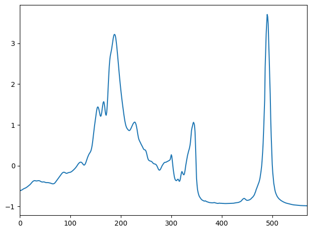
TSTensor(X_train).show(title='1');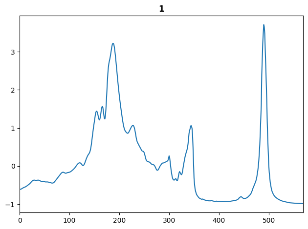
show_tuple((TSTensor(X_train), ['1', '2']))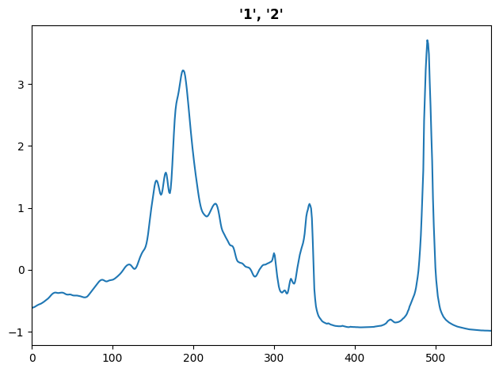
show_tuple((TSTensor(np.arange(10).reshape(2,5)), 1))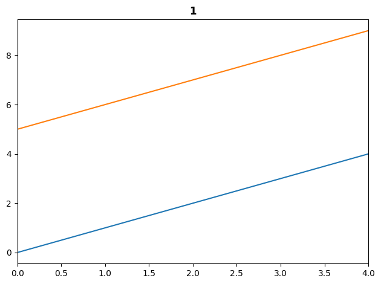
show_tuple((TSTensor(np.arange(10).reshape(2,5)), '1'))
show_tuple((TSTensor(np.arange(10).reshape(2,5)), [1,2]))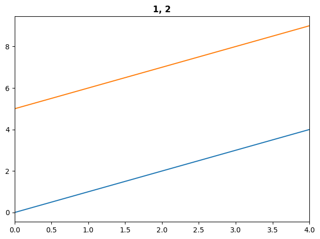
show_tuple((TSTensor(np.arange(10).reshape(2,5)), ['1', '2']))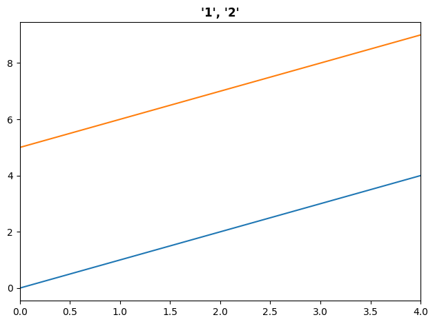
TSMaskTensor
TSMaskTensor (o, dtype=None, device=None, **kwargs)
Returns a tensor with subclass NumpyTensor that has a show method
TSLabelTensor
TSLabelTensor (o, dtype=None, device=None, **kwargs)
Returns a tensor with subclass NumpyTensor that has a show method
t = TSLabelTensor(torch.randint(0,10,(1, 2, 3)))
t, t[0], t[0][0], t[0][0][0](TSLabelTensor(shape:(1, 2, 3), device=cpu, dtype=torch.int64),
TSLabelTensor(shape:(2, 3), device=cpu, dtype=torch.int64),
TSLabelTensor(shape:(3,), device=cpu, dtype=torch.int64),
3)t = TSMaskTensor(torch.randint(0,10,(1, 2, 3)))
t, t[0], t[0][0], t[0][0][0](TSMaskTensor(shape:(1, 2, 3), device=cpu, dtype=torch.int64),
TSMaskTensor(shape:(2, 3), device=cpu, dtype=torch.int64),
TSMaskTensor(shape:(3,), device=cpu, dtype=torch.int64),
5)TSClassification
TSClassification (vocab=None, sort=True)
Vectorized, reversible transform of category string to vocab id
ToInt
ToInt (enc=None, dec=None, split_idx=None, order=None)
Transforms an object dtype to int
ToFloat
ToFloat (enc=None, dec=None, split_idx=None, order=None)
Transforms an object dtype to float (vectorized)
a = np.random.randint(0, 2, 10)
b = np.array(['1', '2', '3'])
c = np.array(['1.0', '2.0', '3.0'])
t = torch.randint(0, 2, (10, ))
test_eq(ToFloat()(a).dtype, 'float32')
test_eq(ToFloat()(b).dtype, 'float32')
test_eq(ToFloat()(c).dtype, 'float32')
test_eq(ToFloat()(t).dtype, torch.float32)a = np.random.rand(10)*10
b = np.array(['1.0', '2.0', '3.0'])
t = torch.rand(10)*10
test_eq(ToInt()(a).dtype, 'int64')
test_eq(ToInt()(b).dtype, 'int64')
test_eq(ToInt()(t).dtype, torch.long)t = TSClassification()
t.setup(y_on_disk[splits[0]])
y_encoded = t(y_on_disk)
print(y_encoded)
test_eq(t.decodes(y_encoded), y_on_disk)TensorCategory([0, 0, 0, 0, 0, 1, 1, 1, 1, 1, 1, 1, 1, 2, 2, 2, 2, 3, 3, 3, 3,
3, 3, 3, 3, 3, 3, 3, 3, 3, 0, 0, 0, 0, 0, 1, 1, 1, 1, 1, 1, 1,
1, 1, 2, 2, 2, 2, 3, 3, 3, 3, 3, 3, 3, 3, 3, 3, 3, 3])y_multi= np.random.randint(0,3,20)
y_multi = np.asarray(alphabet[y_multi]).reshape(4,5)
tfm = TSClassification()
tfm.setup(y_multi)
enc_y_multi = tfm(y_multi)
test_eq(y_multi, tfm.decode(enc_y_multi))
enc_y_multiTensorCategory([[0, 0, 0, 2, 2],
[0, 1, 2, 2, 0],
[0, 2, 0, 2, 1],
[1, 1, 2, 1, 0]])TSMultiLabelClassification
TSMultiLabelClassification (c=None, vocab=None, add_na=False, sort=True)
Reversible combined transform of multi-category strings to one-hot encoded vocab id
TSTensorBlock
TSTensorBlock (type_tfms=None, item_tfms=None, batch_tfms=None, dl_type=None, dls_kwargs=None)
Initialize self. See help(type(self)) for accurate signature.
NumpyTensorBlock
NumpyTensorBlock (type_tfms=None, item_tfms=None, batch_tfms=None, dl_type=None, dls_kwargs=None)
Initialize self. See help(type(self)) for accurate signature.
test_eq(NumpyTensorBlock().item_tfms[0].__name__, 'ToNumpyTensor')
test_eq(TSTensorBlock().item_tfms[0].__name__, 'ToTSTensor')TSDataset
TSDataset (X, y=None, split=None, sel_vars=None, sel_steps=None, types=None, dtype=None, device=None)
Initialize self. See help(type(self)) for accurate signature.
NumpyDataset
NumpyDataset (X, y=None, types=None)
Initialize self. See help(type(self)) for accurate signature.
TorchDataset
TorchDataset (X, y=None)
Initialize self. See help(type(self)) for accurate signature.
a = np.random.rand(5,6,7)
b = np.random.rand(5)
ds = NumpyDataset(a,b)
xb, yb = ds[[0,4]]
test_eq(xb.shape, (2,6,7))
test_eq(yb.shape, (2,))TSTfmdLists
TSTfmdLists (items=None, *rest, use_list=False, match=None)
A Pipeline of tfms applied to a collection of items
| Type | Default | Details | |
|---|---|---|---|
| items | list | Items to apply Transforms to |
|
| use_list | bool | None | Use list in L |
NoTfmLists
NoTfmLists (items=None, *rest, use_list=False, match=None)
A Pipeline of tfms applied to a collection of items
items = X_on_disk
tl = TfmdLists(items, tfms=None, splits=splits)
test_eq(len(tl), len(X_on_disk))
test_eq(len(tl.train), len(splits[0]))
test_eq(len(tl.valid), len(splits[1]))
test_eq(tl[[0,4,7]], X_on_disk[[0,4,7]])
test_eq(tl.train[[0,4,7]], X_on_disk[splits[0][0,4,7]])
test_eq(tl.valid[[0,4,7]], X_on_disk[splits[1][0,4,7]])
test_eq(tl[0], items[0])
test_eq(tl[[0,1]], items[[0,1]])
test_eq(tl.decode(tl[0]), tl[0])
test_eq((tl.split_idx, tl.train.split_idx, tl.valid.split_idx), (None, 0, 1))items = X_on_disk
tl = TSTfmdLists(items, tfms=None, splits=splits)
test_eq(len(tl), len(X_on_disk))
test_eq(len(tl.train), len(splits[0]))
test_eq(len(tl.valid), len(splits[1]))
test_eq(tl[[0,4,7]], X_on_disk[[0,4,7]])
test_eq(tl.train[[0,4,7]], X_on_disk[splits[0][0,4,7]])
test_eq(tl.valid[[0,4,7]], X_on_disk[splits[1][0,4,7]])
test_eq(tl[0], items[0])
test_eq(tl[[0,1]], items[[0,1]])
test_eq(tl.decode(tl[0]), tl[0])
test_eq((tl.split_idx, tl.train.split_idx, tl.valid.split_idx), (None, 0, 1))items = X_on_disk
ntl = NoTfmLists(items, splits=splits)
test_eq(len(ntl), len(X_on_disk))
test_eq(len(ntl.train), len(splits[0]))
test_eq(len(ntl.valid), len(splits[1]))
test_eq(ntl._splits, np.arange(len(X_on_disk)))
test_eq(ntl.train._splits, np.arange(len(splits[0])))
test_eq(ntl.valid._splits, np.arange(len(splits[0]), len(X_on_disk)))
print(ntl)
print(ntl.train)
print(ntl.valid)
test_eq(ntl[[0,4,7]], X_on_disk[[0,4,7]])
test_eq(ntl.train[[0,4,7]], X_on_disk[splits[0][0,4,7]])
test_eq(ntl.valid[[0,4,7]], X_on_disk[splits[1][0,4,7]])
test_eq(ntl[0], items[0])
test_eq(ntl[[0,1]], items[[0,1]])
test_eq(ntl[:], X_on_disk)
ntl[0].shape, stack(ntl[[0,1]]).shape
test_eq(ntl.decode(ntl[0]), ntl[0])
assert id(items) == id(ntl.items) == id(ntl.train.items) == id(ntl.valid.items)
test_eq((ntl.split_idx, ntl.train.split_idx, ntl.valid.split_idx), (None, 0, 1))NoTfmLists: memmap(60, 1, 570)
NoTfmLists: memmap(30, 1, 570)
NoTfmLists: memmap(30, 1, 570)subitems = X_on_disk
new_ntl = ntl._new(X_on_disk)
test_eq(new_ntl[:], X_on_disk)idxs = np.random.choice(len(X_on_disk), 10, False)
new_ntl = ntl._new(X_on_disk[idxs])
test_eq(new_ntl[:], X_on_disk[idxs])idxs = np.random.choice(len(X_on_disk), 10, False)
new_ntl = ntl.valid._new(X_on_disk[idxs])
test_eq(new_ntl[:], X_on_disk[idxs])tscoll_repr
tscoll_repr (c, max_n=10)
String repr of up to max_n items of (possibly lazy) collection c
NumpyDatasets
NumpyDatasets (items:list=None, tfms:list|Pipeline=None, tls:TfmdLists=None, n_inp:int=None, dl_type=None, use_list:bool=None, do_setup:bool=True, split_idx:int=None, train_setup:bool=True, splits:list=None, types=None, verbose:bool=False)
A dataset that creates tuples from X (and y) and applies tfms of type item_tfms
| Type | Default | Details | |
|---|---|---|---|
| items | list | Items to apply Transforms to |
|
| tfms | list | Pipeline | Transform(s) or Pipeline to apply |
|
| tls | NoneType | None | |
| n_inp | NoneType | None | |
| dl_type | TfmdDL | None | Type of DataLoader |
| use_list | bool | None | Use list in L |
| do_setup | bool | True | Call setup() for Transform |
| split_idx | int | None | Apply Transform(s) to training or validation set. 0 for training set and 1 for validation set |
| train_setup | bool | True | Apply Transform(s) only on training DataLoader |
| splits | list | None | Indices for training and validation sets |
| types | NoneType | None | Types of data in items |
| verbose | bool | False | Print verbose output |
TSDatasets
TSDatasets (items:list=None, tfms:list|Pipeline=None, tls:TfmdLists=None, n_inp:int=None, dl_type=None, use_list:bool=None, do_setup:bool=True, split_idx:int=None, train_setup:bool=True, splits:list=None, types=None, verbose:bool=False)
A dataset that creates tuples from X (and optionally y) and applies item_tfms
| Type | Default | Details | |
|---|---|---|---|
| items | list | Items to apply Transforms to |
|
| tfms | list | Pipeline | Transform(s) or Pipeline to apply |
|
| tls | NoneType | None | |
| n_inp | NoneType | None | |
| dl_type | TfmdDL | None | Type of DataLoader |
| use_list | bool | None | Use list in L |
| do_setup | bool | True | Call setup() for Transform |
| split_idx | int | None | Apply Transform(s) to training or validation set. 0 for training set and 1 for validation set |
| train_setup | bool | True | Apply Transform(s) only on training DataLoader |
| splits | list | None | Indices for training and validation sets |
| types | NoneType | None | Types of data in items |
| verbose | bool | False | Print verbose output |
dsets = TSDatasets(X_on_disk, y_on_disk, splits=splits, tfms=[None, TSClassification()], inplace=True)
i = np.random.choice(len(splits[0]), 10, False).tolist()
test_eq(dsets.subset(i), dsets.train.subset(i))
dsets.valid.subset(i)
dsets.valid.subset(i)[[0,6,8]]
test_eq(dsets.subset(i)[[0,6,8]], dsets.train.subset(i)[[0,6,8]])
dsets.subset([0,7,3])
dsets.subset(i), dsets.train.subset(i), dsets.valid.subset(i)((#10) [(TSTensor(vars:1, len:570, device=cpu, dtype=torch.float32), TensorCategory(1)), (TSTensor(vars:1, len:570, device=cpu, dtype=torch.float32), TensorCategory(1)), (TSTensor(vars:1, len:570, device=cpu, dtype=torch.float32), TensorCategory(2)), (TSTensor(vars:1, len:570, device=cpu, dtype=torch.float32), TensorCategory(1)), (TSTensor(vars:1, len:570, device=cpu, dtype=torch.float32), TensorCategory(3)), (TSTensor(vars:1, len:570, device=cpu, dtype=torch.float32), TensorCategory(3)), (TSTensor(vars:1, len:570, device=cpu, dtype=torch.float32), TensorCategory(2)), (TSTensor(vars:1, len:570, device=cpu, dtype=torch.float32), TensorCategory(3)), (TSTensor(vars:1, len:570, device=cpu, dtype=torch.float32), TensorCategory(3)), (TSTensor(vars:1, len:570, device=cpu, dtype=torch.float32), TensorCategory(3))] ...],
(#10) [(TSTensor(vars:1, len:570, device=cpu, dtype=torch.float32), TensorCategory(1)), (TSTensor(vars:1, len:570, device=cpu, dtype=torch.float32), TensorCategory(1)), (TSTensor(vars:1, len:570, device=cpu, dtype=torch.float32), TensorCategory(2)), (TSTensor(vars:1, len:570, device=cpu, dtype=torch.float32), TensorCategory(1)), (TSTensor(vars:1, len:570, device=cpu, dtype=torch.float32), TensorCategory(3)), (TSTensor(vars:1, len:570, device=cpu, dtype=torch.float32), TensorCategory(3)), (TSTensor(vars:1, len:570, device=cpu, dtype=torch.float32), TensorCategory(2)), (TSTensor(vars:1, len:570, device=cpu, dtype=torch.float32), TensorCategory(3)), (TSTensor(vars:1, len:570, device=cpu, dtype=torch.float32), TensorCategory(3)), (TSTensor(vars:1, len:570, device=cpu, dtype=torch.float32), TensorCategory(3))] ...],
(#10) [(TSTensor(vars:1, len:570, device=cpu, dtype=torch.float32), TensorCategory(1)), (TSTensor(vars:1, len:570, device=cpu, dtype=torch.float32), TensorCategory(1)), (TSTensor(vars:1, len:570, device=cpu, dtype=torch.float32), TensorCategory(2)), (TSTensor(vars:1, len:570, device=cpu, dtype=torch.float32), TensorCategory(1)), (TSTensor(vars:1, len:570, device=cpu, dtype=torch.float32), TensorCategory(3)), (TSTensor(vars:1, len:570, device=cpu, dtype=torch.float32), TensorCategory(3)), (TSTensor(vars:1, len:570, device=cpu, dtype=torch.float32), TensorCategory(2)), (TSTensor(vars:1, len:570, device=cpu, dtype=torch.float32), TensorCategory(3)), (TSTensor(vars:1, len:570, device=cpu, dtype=torch.float32), TensorCategory(3)), (TSTensor(vars:1, len:570, device=cpu, dtype=torch.float32), TensorCategory(3))] ...])NumpyDatasets.add_unlabeled
NumpyDatasets.add_unlabeled (X, inplace=True)
NumpyDatasets.add_test
NumpyDatasets.add_test (X, y=None, inplace=True)
NumpyDatasets.add_dataset
NumpyDatasets.add_dataset (X, y=None, inplace=True)
add_ds
add_ds (dsets, X, y=None, inplace=True)
Create test datasets from X (and y) using validation transforms of dsets
dsets = TSDatasets(X_on_disk, y_on_disk, splits=splits, tfms=[None, TSClassification()], inplace=True)
print(dsets.train[0][0].shape, dsets.train[[0,1]][0].shape)
print(dsets.split_idx, dsets.train.split_idx, dsets.valid.split_idx)
print(dsets.new_empty())
dsetstorch.Size([1, 570]) torch.Size([2, 1, 570])
None 0 1
(#0) [](#60) [(TSTensor(vars:1, len:570, device=cpu, dtype=torch.float32), TensorCategory(0)), (TSTensor(vars:1, len:570, device=cpu, dtype=torch.float32), TensorCategory(0)), (TSTensor(vars:1, len:570, device=cpu, dtype=torch.float32), TensorCategory(0)), (TSTensor(vars:1, len:570, device=cpu, dtype=torch.float32), TensorCategory(0)), (TSTensor(vars:1, len:570, device=cpu, dtype=torch.float32), TensorCategory(0)), (TSTensor(vars:1, len:570, device=cpu, dtype=torch.float32), TensorCategory(1)), (TSTensor(vars:1, len:570, device=cpu, dtype=torch.float32), TensorCategory(1)), (TSTensor(vars:1, len:570, device=cpu, dtype=torch.float32), TensorCategory(1)), (TSTensor(vars:1, len:570, device=cpu, dtype=torch.float32), TensorCategory(1)), (TSTensor(vars:1, len:570, device=cpu, dtype=torch.float32), TensorCategory(1))] ...]dsets = TSDatasets(X_on_disk, y_on_disk, splits=splits, tfms=[None, TSClassification()], inplace=False)
print(dsets.train[0][0].shape, dsets.train[[0,1]][0].shape)
print(dsets.split_idx, dsets.train.split_idx, dsets.valid.split_idx)
print(dsets.new_empty())
dsetstorch.Size([1, 570]) torch.Size([2, 1, 570])
None 0 1
(#0) [](#60) [(TSTensor(vars:1, len:570, device=cpu, dtype=torch.float32), TensorCategory([0])), (TSTensor(vars:1, len:570, device=cpu, dtype=torch.float32), TensorCategory([0])), (TSTensor(vars:1, len:570, device=cpu, dtype=torch.float32), TensorCategory([0])), (TSTensor(vars:1, len:570, device=cpu, dtype=torch.float32), TensorCategory([0])), (TSTensor(vars:1, len:570, device=cpu, dtype=torch.float32), TensorCategory([0])), (TSTensor(vars:1, len:570, device=cpu, dtype=torch.float32), TensorCategory([1])), (TSTensor(vars:1, len:570, device=cpu, dtype=torch.float32), TensorCategory([1])), (TSTensor(vars:1, len:570, device=cpu, dtype=torch.float32), TensorCategory([1])), (TSTensor(vars:1, len:570, device=cpu, dtype=torch.float32), TensorCategory([1])), (TSTensor(vars:1, len:570, device=cpu, dtype=torch.float32), TensorCategory([1]))] ...]dsets = TSDatasets(X_on_disk, y_on_disk, tfms=[None, TSClassification()], splits=splits, inplace=True)
idxs = np.random.choice(len(dsets), 10, False)
test_eq(dsets[idxs][0].numpy(), X_on_disk[idxs])
test_eq(dsets[idxs][1].numpy(), y_array[idxs])
idxs = np.random.choice(len(dsets.train), 10, False)
test_eq(dsets.train[idxs][0].numpy(), X_on_disk[splits[0][idxs]])
test_eq(dsets.train[idxs][1].numpy(), y_array[splits[0][idxs]])
idxs = np.random.choice(len(dsets.valid), 10, False)
test_eq(dsets.valid[idxs][0].numpy(), X_on_disk[splits[1][idxs]])
test_eq(dsets.valid[idxs][1].numpy(), y_array[splits[1][idxs]])dsets = TSDatasets(X_on_disk, y_on_disk, tfms=[None, TSClassification()], splits=splits, inplace=False)
assert id(X_on_disk) == id(dsets.tls[0].items) == id(dsets.ptls[0].items)
assert id(X_on_disk) == id(dsets.train.tls[0].items) == id(dsets.train.ptls[0].items)
assert id(X_on_disk) == id(dsets.valid.tls[0].items) == id(dsets.valid.ptls[0].items)
idxs = np.random.choice(len(dsets), 10, False)
test_eq(dsets[idxs][0].numpy(), X_on_disk[idxs])
test_eq(dsets[idxs][1].numpy(), y_array[idxs])
idxs = np.random.choice(len(dsets.train), 10, False)
test_eq(dsets.train[idxs][0].numpy(), X_on_disk[splits[0][idxs]])
test_eq(dsets.train[idxs][1].numpy(), y_array[splits[0][idxs]])
idxs = np.random.choice(len(dsets.valid), 10, False)
test_eq(dsets.valid[idxs][0].numpy(), X_on_disk[splits[1][idxs]])
test_eq(dsets.valid[idxs][1].numpy(), y_array[splits[1][idxs]])dsets = TSDatasets(X_on_disk, splits=splits, inplace=True)
idxs = np.random.choice(len(dsets), 10, False)
test_eq(dsets[idxs][0].numpy(), X_on_disk[idxs])
idxs = np.random.choice(len(dsets.train), 10, False)
test_eq(dsets.train[idxs][0].numpy(), X_on_disk[splits[0][idxs]])
idxs = np.random.choice(len(dsets.valid), 10, False)
test_eq(dsets.valid[idxs][0].numpy(), X_on_disk[splits[1][idxs]])dsets = TSDatasets(X_on_disk, splits=splits, inplace=False)
assert id(X_on_disk) == id(dsets.tls[0].items) == id(dsets.ptls[0].items)
assert id(X_on_disk) == id(dsets.train.tls[0].items) == id(dsets.train.ptls[0].items)
assert id(X_on_disk) == id(dsets.valid.tls[0].items) == id(dsets.valid.ptls[0].items)
idxs = np.random.choice(len(dsets), 10, False)
test_eq(dsets[idxs][0].numpy(), X_on_disk[idxs])
idxs = np.random.choice(len(dsets.train), 10, False)
test_eq(dsets.train[idxs][0].numpy(), X_on_disk[splits[0][idxs]])
idxs = np.random.choice(len(dsets.valid), 10, False)
test_eq(dsets.valid[idxs][0].numpy(), X_on_disk[splits[1][idxs]])dsets = TSDatasets(X_on_disk, y_array, tfms=None, splits=splits, inplace=True)
idxs = np.random.choice(len(dsets), 10, False)
test_eq(dsets[idxs][0].numpy(), X_on_disk[idxs])
test_eq(dsets[idxs][1].numpy(), y_array[idxs])
idxs = np.random.choice(len(dsets.train), 10, False)
test_eq(dsets.train[idxs][0].numpy(), X_on_disk[splits[0][idxs]])
test_eq(dsets.train[idxs][1].numpy(), y_array[splits[0][idxs]])
idxs = np.random.choice(len(dsets.valid), 10, False)
test_eq(dsets.valid[idxs][0].numpy(), X_on_disk[splits[1][idxs]])
test_eq(dsets.valid[idxs][1].numpy(), y_array[splits[1][idxs]])dsets = TSDatasets(X_on_disk, y_array, tfms=None, splits=splits, inplace=False)
assert id(X_on_disk) == id(dsets.tls[0].items) == id(dsets.ptls[0].items)
assert id(X_on_disk) == id(dsets.train.tls[0].items) == id(dsets.train.ptls[0].items)
assert id(X_on_disk) == id(dsets.valid.tls[0].items) == id(dsets.valid.ptls[0].items)
idxs = np.random.choice(len(dsets), 10, False)
test_eq(dsets[idxs][0].numpy(), X_on_disk[idxs])
test_eq(dsets[idxs][1].numpy(), y_array[idxs])
idxs = np.random.choice(len(dsets.train), 10, False)
test_eq(dsets.train[idxs][0].numpy(), X_on_disk[splits[0][idxs]])
test_eq(dsets.train[idxs][1].numpy(), y_array[splits[0][idxs]])
idxs = np.random.choice(len(dsets.valid), 10, False)
test_eq(dsets.valid[idxs][0].numpy(), X_on_disk[splits[1][idxs]])
test_eq(dsets.valid[idxs][1].numpy(), y_array[splits[1][idxs]])dsets = TSDatasets(X_on_disk, y_on_disk, tfms=[None, TSClassification()], splits=None, inplace=True)
idxs = np.random.choice(len(dsets), 10, False)
test_eq(dsets[idxs][0].numpy(), X_on_disk[idxs])
test_eq(dsets[idxs][1].numpy(), y_array[idxs])dsets = TSDatasets(X_on_disk, y_on_disk, tfms=[None, TSClassification()], splits=None, inplace=False)
assert id(X_on_disk) == id(dsets.tls[0].items) == id(dsets.ptls[0].items)
assert id(X_on_disk) == id(dsets.train.tls[0].items) == id(dsets.train.ptls[0].items)
assert id(X_on_disk) == id(dsets.valid.tls[0].items) == id(dsets.valid.ptls[0].items)
idxs = np.random.choice(len(dsets), 10, False)
test_eq(dsets[idxs][0].numpy(), X_on_disk[idxs])
test_eq(dsets[idxs][1].numpy(), y_array[idxs])dsets = TSDatasets(X_on_disk, y_array, tfms=None, splits=splits)
test_eq(dsets.train[0:10], dsets.add_dataset(X_on_disk[0:10], y_array[0:10])[:])
test_eq(dsets.train[0:10][0], dsets.add_dataset(X_on_disk[0:10])[:][0])dsets = TSDatasets(X_on_disk, y_array, tfms=None, splits=splits)
torch.save(dsets, 'export/dsets.pth')
del dsets
dsets = torch.load('export/dsets.pth')
dsets(#60) [(TSTensor(vars:1, len:570, device=cpu, dtype=torch.float32), tensor(0)), (TSTensor(vars:1, len:570, device=cpu, dtype=torch.float32), tensor(0)), (TSTensor(vars:1, len:570, device=cpu, dtype=torch.float32), tensor(0)), (TSTensor(vars:1, len:570, device=cpu, dtype=torch.float32), tensor(0)), (TSTensor(vars:1, len:570, device=cpu, dtype=torch.float32), tensor(0)), (TSTensor(vars:1, len:570, device=cpu, dtype=torch.float32), tensor(1)), (TSTensor(vars:1, len:570, device=cpu, dtype=torch.float32), tensor(1)), (TSTensor(vars:1, len:570, device=cpu, dtype=torch.float32), tensor(1)), (TSTensor(vars:1, len:570, device=cpu, dtype=torch.float32), tensor(1)), (TSTensor(vars:1, len:570, device=cpu, dtype=torch.float32), tensor(1))] ...]dsets = TSDatasets(X_on_disk, y_array, tfms=None, splits=splits)
torch.save(dsets.train, 'export/dsets.pth')
del dsets
dsets = torch.load('export/dsets.pth')
dsets(#30) [(TSTensor(vars:1, len:570, device=cpu, dtype=torch.float32), tensor(0)), (TSTensor(vars:1, len:570, device=cpu, dtype=torch.float32), tensor(0)), (TSTensor(vars:1, len:570, device=cpu, dtype=torch.float32), tensor(0)), (TSTensor(vars:1, len:570, device=cpu, dtype=torch.float32), tensor(0)), (TSTensor(vars:1, len:570, device=cpu, dtype=torch.float32), tensor(0)), (TSTensor(vars:1, len:570, device=cpu, dtype=torch.float32), tensor(1)), (TSTensor(vars:1, len:570, device=cpu, dtype=torch.float32), tensor(1)), (TSTensor(vars:1, len:570, device=cpu, dtype=torch.float32), tensor(1)), (TSTensor(vars:1, len:570, device=cpu, dtype=torch.float32), tensor(1)), (TSTensor(vars:1, len:570, device=cpu, dtype=torch.float32), tensor(1))] ...]dsets = TSDatasets(X_on_disk, y_array, tfms=None, splits=splits)
test_eq(len(dsets.train), len(X_train))
dsets = TSDatasets(X_on_disk, y_array, tfms=None, splits=splits)
test_eq(len(dsets.train), len(X_train))
dsets = TSDatasets(X_on_disk, y_array, tfms=[add(1), TSCategorize()], splits=splits)
test_eq(len(dsets.train), len(X_train))
# test_eq(dsets.train[0][0].data, tensor(X_train[0] + 1))
test_eq(dsets.train[0][1].item(), y_tensor[0])dsets = TSDatasets(X_on_disk, y_on_disk, tfms=[None, TSCategorize()], splits=splits)
test_eq(len(dsets.add_test(X_train, y_train)), len(X_train))
test_eq(len(dsets.add_unlabeled(X_train)), len(X_train))TSDataLoader
TSDataLoader (dataset, bs=64, shuffle=False, drop_last=False, num_workers=0, verbose=False, do_setup=True, sort=False, weights=None, partial_n=None, sampler=None, pin_memory=False, timeout=0, batch_size=None, indexed=None, n=None, device=None, persistent_workers=False, pin_memory_device='', wif=None, before_iter=None, after_item=None, before_batch=None, after_batch=None, after_iter=None, create_batches=None, create_item=None, create_batch=None, retain=None, get_idxs=None, sample=None, shuffle_fn=None, do_batch=None)
Transformed DataLoader
| Type | Default | Details | |
|---|---|---|---|
| dataset | Map- or iterable-style dataset from which to load the data | ||
| bs | int | 64 | Size of batch |
| shuffle | bool | False | Whether to shuffle data |
| drop_last | bool | False | |
| num_workers | int | None | Number of CPU cores to use in parallel (default: All available up to 16) |
| verbose | bool | False | Whether to print verbose logs |
| do_setup | bool | True | Whether to run setup() for batch transform(s) |
| sort | bool | False | |
| weights | NoneType | None | |
| partial_n | NoneType | None | |
| sampler | NoneType | None | |
| pin_memory | bool | False | |
| timeout | int | 0 | |
| batch_size | NoneType | None | |
| indexed | NoneType | None | |
| n | NoneType | None | |
| device | NoneType | None | |
| persistent_workers | bool | False | |
| pin_memory_device | str | ||
| wif | NoneType | None | |
| before_iter | NoneType | None | |
| after_item | NoneType | None | |
| before_batch | NoneType | None | |
| after_batch | NoneType | None | |
| after_iter | NoneType | None | |
| create_batches | NoneType | None | |
| create_item | NoneType | None | |
| create_batch | NoneType | None | |
| retain | NoneType | None | |
| get_idxs | NoneType | None | |
| sample | NoneType | None | |
| shuffle_fn | NoneType | None | |
| do_batch | NoneType | None |
NumpyDataLoader
NumpyDataLoader (dataset, bs=64, shuffle=False, drop_last=False, num_workers=0, verbose=False, do_setup=True, sort=False, weights=None, partial_n=None, sampler=None, pin_memory=False, timeout=0, batch_size=None, indexed=None, n=None, device=None, persistent_workers=False, pin_memory_device='', wif=None, before_iter=None, after_item=None, before_batch=None, after_batch=None, after_iter=None, create_batches=None, create_item=None, create_batch=None, retain=None, get_idxs=None, sample=None, shuffle_fn=None, do_batch=None)
Transformed DataLoader
| Type | Default | Details | |
|---|---|---|---|
| dataset | Map- or iterable-style dataset from which to load the data | ||
| bs | int | 64 | Size of batch |
| shuffle | bool | False | Whether to shuffle data |
| drop_last | bool | False | |
| num_workers | int | None | Number of CPU cores to use in parallel (default: All available up to 16) |
| verbose | bool | False | Whether to print verbose logs |
| do_setup | bool | True | Whether to run setup() for batch transform(s) |
| sort | bool | False | |
| weights | NoneType | None | |
| partial_n | NoneType | None | |
| sampler | NoneType | None | |
| pin_memory | bool | False | |
| timeout | int | 0 | |
| batch_size | NoneType | None | |
| indexed | NoneType | None | |
| n | NoneType | None | |
| device | NoneType | None | |
| persistent_workers | bool | False | |
| pin_memory_device | str | ||
| wif | NoneType | None | |
| before_iter | NoneType | None | |
| after_item | NoneType | None | |
| before_batch | NoneType | None | |
| after_batch | NoneType | None | |
| after_iter | NoneType | None | |
| create_batches | NoneType | None | |
| create_item | NoneType | None | |
| create_batch | NoneType | None | |
| retain | NoneType | None | |
| get_idxs | NoneType | None | |
| sample | NoneType | None | |
| shuffle_fn | NoneType | None | |
| do_batch | NoneType | None |
TSDataLoaders
TSDataLoaders (*loaders, path='.', device=None)
Basic wrapper around several DataLoaders.
NumpyDataLoaders
NumpyDataLoaders (*loaders, path='.', device=None)
Basic wrapper around several DataLoaders.
StratifiedSampler
StratifiedSampler (y, bs:int=64, shuffle:bool=False, drop_last:bool=False)
Sampler where batches preserve the percentage of samples for each class
| Type | Default | Details | |
|---|---|---|---|
| y | The target variable for supervised learning problems. Stratification is done based on the y labels. | ||
| bs | int | 64 | Batch size |
| shuffle | bool | False | Flag to shuffle each class’s samples before splitting into batches. |
| drop_last | bool | False | Flag to drop the last incomplete batch. |
a = np.concatenate([np.zeros(90), np.ones(10)])
sampler = StratifiedSampler(a, bs=32, shuffle=True, drop_last=True)
idxs = np.array(list(iter(sampler)))
print(idxs[:32])
print(a[idxs][:32])
test_eq(a[idxs][:32].mean(), .1)[[ 0 2 9 11 13 15 18 19 23 24 25 27 30 33 37 42 50 52 57 58 59 64 65 71
74 76 77 80 82 89 90 91 94 99 6 12 14 17 20 21 28 32 34 36 43 44 45 46
47 48 51 53 55 56 61 63 66 67 68 69 78 84 85 87 93 95 98 1 3 4 5 7
8 10 16 22 26 29 31 35 38 39 40 41 49 54 60 62 70 72 73 75 79 81 83 86
88 92 96 97]]
[[0. 0. 0. 0. 0. 0. 0. 0. 0. 0. 0. 0. 0. 0. 0. 0. 0. 0. 0. 0. 0. 0. 0. 0.
0. 0. 0. 0. 0. 0. 1. 1. 1. 1. 0. 0. 0. 0. 0. 0. 0. 0. 0. 0. 0. 0. 0. 0.
0. 0. 0. 0. 0. 0. 0. 0. 0. 0. 0. 0. 0. 0. 0. 0. 1. 1. 1. 0. 0. 0. 0. 0.
0. 0. 0. 0. 0. 0. 0. 0. 0. 0. 0. 0. 0. 0. 0. 0. 0. 0. 0. 0. 0. 0. 0. 0.
0. 1. 1. 1.]]get_c
get_c (dls)
get_best_dls_params
get_best_dls_params (dls, n_iters=10, num_workers=[0, 1, 2, 4, 8], pin_memory=[True, False], prefetch_factor=[2, 4, 8], return_best=True, verbose=True)
get_best_dl_params
get_best_dl_params (dl, n_iters=10, num_workers=[0, 1, 2, 4, 8], pin_memory=[True, False], prefetch_factor=[2, 4, 8], return_best=True, verbose=True)
get_subset_dl
get_subset_dl (dl, idxs)
get_ts_dl
get_ts_dl (X, y=None, split=None, sel_vars=None, sel_steps=None, tfms=None, inplace=True, path='.', bs=64, batch_tfms=None, num_workers=0, device=None, shuffle_train=True, drop_last=True, weights=None, partial_n=None, sampler=None, sort=False, **kwargs)
get_ts_dls
get_ts_dls (X, y=None, splits=None, sel_vars=None, sel_steps=None, tfms=None, inplace=True, path='.', bs=64, batch_tfms=None, num_workers=0, device=None, shuffle_train=True, drop_last=True, weights=None, partial_n=None, sampler=None, sort=False, **kwargs)
X, y, splits = get_UCR_data(dsid, on_disk=False, split_data=False)
dls = get_ts_dls(X, y, tfms=[None, TSClassification()], splits=splits, bs=8)
dls = get_best_dls_params(dls, prefetch_factor=[2, 4, 8, 16])
Dataloader 0
num_workers: 0 pin_memory: True prefetch_factor: 2 - time: 9.808 ms/iter
num_workers: 0 pin_memory: False prefetch_factor: 2 - time: 2.598 ms/iter
best dl params:
best num_workers : 0
best pin_memory : False
best prefetch_factor: 2
return_best : True
Dataloader 1
num_workers: 0 pin_memory: True prefetch_factor: 2 - time: 0.421 ms/iter
num_workers: 0 pin_memory: False prefetch_factor: 2 - time: 0.315 ms/iter
best dl params:
best num_workers : 0
best pin_memory : False
best prefetch_factor: 2
return_best : True
X, y, splits = get_UCR_data(dsid, on_disk=False, split_data=False)
dls = get_ts_dls(X, y, tfms=[None, TSClassification()], splits=splits, bs=8)
b=first(dls.train)
dls.decode(b)
test_eq(X.shape[1], dls.vars)
test_eq(X.shape[-1], dls.len)X, y, splits = get_UCR_data('OliveOil', on_disk=False, split_data=False)
dls = get_ts_dls(X, y, tfms=[None, TSClassification()], splits=splits, bs=64, inplace=True)
idxs = np.random.choice(len(dls.valid_ds), 10, False)
new_dl = get_subset_dl(dls.train, idxs)
idxs = np.random.choice(len(dls.valid_ds), 10, False)
new_dl = get_subset_dl(dls.valid, idxs)
test_eq(new_dl.one_batch()[0].cpu().numpy(), X[splits[1][idxs]])X, y, splits = get_UCR_data('OliveOil', on_disk=False, split_data=False)
weights = np.random.rand(len(X))
dls = get_ts_dls(X, y, tfms=[None, TSClassification()], splits=splits, bs=64, inplace=True, weights=weights)
weights2 = weights[splits[0]] / weights[splits[0]].sum()
test_eq(dls.train.weights, weights2)
test_eq(dls.valid.weights, None)partial_n = 12
X, y, splits = get_UCR_data('OliveOil', on_disk=False, split_data=False)
dls = get_ts_dls(X, y, splits=splits, tfms=[None, TSClassification()], bs=64, inplace=True, partial_n=partial_n)
test_eq(len(dls.train.one_batch()[0]), partial_n)
partial_n = .1
X, y, splits = get_UCR_data('OliveOil', on_disk=False, split_data=False)
dls = get_ts_dls(X, y, tfms=[None, TSClassification()], bs=64, inplace=True, partial_n=partial_n)
test_eq(len(dls.train.one_batch()[0]), int(round(len(dls.train.dataset) * partial_n)))You’ll now be able to pass a sampler to a tsai dataloader.
You should use a sampler for the train set and a sampler for the validation set. You’ll need to pass an object with the same length as each dataset. For example, the splits like in the case below.
⚠️ Remember to set shuffle=False when using a sampler since they a mutually exclusive. This means that when you use a sampler, you always need to set the shuffle in the dataloader to False. The sampler will control whether the indices are shuffled or not (you can set shuffle to True or False in the sampler).
drop_last is managed in the dataloder though.
X, y, splits = get_UCR_data('OliveOil', on_disk=False, split_data=False)
train_sampler = torch.utils.data.sampler.RandomSampler(splits[0])
valid_sampler = torch.utils.data.sampler.SequentialSampler(splits[1])
dls = get_ts_dls(X, y, splits=splits, tfms=[None, TSClassification()], bs=8, inplace=True,
shuffle=False, drop_last=True, sampler=[train_sampler, valid_sampler])
print('train')
for _ in dls.train:
print(dls.train.idxs)
print('valid')
for _ in dls.valid:
print(dls.valid.idxs)train
[24, 11, 19, 7, 18, 6, 14, 29]
[3, 15, 13, 27, 25, 21, 5, 22]
[0, 10, 8, 23, 16, 2, 4, 26]
valid
[0, 1, 2, 3, 4, 5, 6, 7]
[8, 9, 10, 11, 12, 13, 14, 15]
[16, 17, 18, 19, 20, 21, 22, 23]
[24, 25, 26, 27, 28, 29]X, y, splits = get_UCR_data('OliveOil', on_disk=False, split_data=False)
train_sampler = torch.utils.data.sampler.SequentialSampler(splits[0])
valid_sampler = torch.utils.data.sampler.SequentialSampler(splits[1])
dls = get_ts_dls(X, y, splits=splits, tfms=[None, TSClassification()], bs=64, inplace=True,
shuffle=False, sampler=[train_sampler, valid_sampler])
test_eq(dls.get_idxs(), np.arange(len(splits[0])))
test_eq(dls.train.get_idxs(), np.arange(len(splits[0])))
test_eq(dls.valid.get_idxs(), np.arange(len(splits[1])))
xb = dls.valid.one_batch()[0].cpu().numpy()
test_close(xb, X[dls.valid.split_idxs])
X, y, splits = get_UCR_data('OliveOil', on_disk=False, split_data=False)
train_sampler = torch.utils.data.sampler.RandomSampler(splits[0])
valid_sampler = torch.utils.data.sampler.SequentialSampler(splits[0])
dls = get_ts_dls(X, y, splits=splits, tfms=[None, TSClassification()], bs=32, inplace=True,
shuffle=False, drop_last=True, sampler=[train_sampler, valid_sampler])
test_ne(dls.train.get_idxs(), np.arange(len(splits[0])))
test_eq(np.sort(dls.train.get_idxs()), np.arange(len(splits[0])))
test_eq(dls.valid.get_idxs(), np.arange(len(splits[1])))X, y, splits = get_UCR_data('OliveOil', on_disk=False, split_data=False)
dls = get_ts_dls(X, y, tfms=[None, TSClassification()], splits=splits, bs=64, inplace=False)
idxs = np.random.choice(len(dls.valid_ds), 10, False)
new_dl = get_subset_dl(dls.train, idxs)
idxs = np.random.choice(len(dls.valid_ds), 10, False)
new_dl = get_subset_dl(dls.valid, idxs)
test_eq(new_dl.one_batch()[0].cpu().numpy(), X[splits[1][idxs]])X, y, splits = get_UCR_data('OliveOil', on_disk=False, split_data=False)
dls = get_ts_dls(X, y, tfms=[None, TSClassification()], splits=splits, bs=8)
b = dls.one_batch()
input_idxs = dls.input_idxs
test_eq(b[0].cpu().numpy(), X[input_idxs])
b = dls.train.one_batch()
input_idxs = dls.train.input_idxs
test_eq(b[0].cpu().numpy(), X[input_idxs])
assert max(input_idxs) < len(splits[0])
b = dls.valid.one_batch()
input_idxs = dls.valid.input_idxs
test_eq(b[0].cpu().numpy(), X[input_idxs])
assert min(input_idxs) >= len(splits[0])X, y, splits = get_UCR_data('OliveOil', on_disk=False, split_data=False)
dls = get_ts_dls(X, y, tfms=[None, TSCategorize()], splits=splits, bs=8)
b=first(dls.train)
dls.decode(b)
test_eq(X.shape[1], dls.vars)
test_eq(X.shape[-1], dls.len)X, y, splits = get_UCR_data('OliveOil', on_disk=False, split_data=False)
dls = get_ts_dls(X, y, tfms=[None, TSCategorize()], splits=splits, bs=8, weights=np.random.randint(0, 3, len(y)))
b=first(dls.train)
dls.decode(b)
test_eq(X.shape[1], dls.vars)
test_eq(X.shape[-1], dls.len)X, y, splits = get_UCR_data('OliveOil', on_disk=False, split_data=False)
dsets = TSDatasets(X, y, tfms=[None, TSCategorize()], splits=splits)
ts_dls = TSDataLoaders.from_dsets(dsets.train, dsets.valid, device=default_device(), bs=4)
torch.save(ts_dls, 'export/ts_dls.pth')
del ts_dls
ts_dls = torch.load('export/ts_dls.pth')
for xb,yb in ts_dls.train:
test_eq(tensor(X[ts_dls.train.idxs]), xb.cpu())X, y, splits = get_UCR_data('OliveOil', on_disk=False, split_data=False)
dls = get_ts_dls(X, y, tfms=[None, TSCategorize()], splits=splits, bs=4)
for xb,yb in dls.train:
test_eq(xb.cpu().numpy(), X[dls.train.input_idxs])
for xb,yb in dls.valid:
test_eq(xb.cpu().numpy(), X[dls.valid.input_idxs])test_eq((ts_dls.train.shuffle, ts_dls.valid.shuffle, ts_dls.train.drop_last, ts_dls.valid.drop_last), (True, False, True, False))dsid = 'OliveOil'
X, y, splits = get_UCR_data(dsid, split_data=False)
dls = get_ts_dls(X, y, tfms=[None, TSCategorize()], splits=splits, bs=8, num_workers=0)
xb, yb = first(dls.train)
test_eq(tensor(X[dls.train.idxs]), xb.cpu())test_eq((dls.train.shuffle, dls.valid.shuffle, dls.train.drop_last, dls.valid.drop_last), (True, False, True, False))# multiclass
dsid = 'OliveOil'
X, y, splits = get_UCR_data(dsid, on_disk=True, split_data=False)
dls = get_ts_dls(X, y, tfms=[None, TSCategorize()], splits=splits, inplace=True)
dls.show_dist()
dls.train.show_dist()
xb,yb = first(dls.train)
test_eq((dls.cat, dls.c), (True, 4))
test_ne(dls.cws.cpu().numpy(), None)
dls.decoder((xb, ))
dls.decoder((xb[0], ))
dls.decoder((xb, yb))
dls.decoder((xb[0], yb[0]))
dls.decoder(yb)
dls.decoder(yb[0])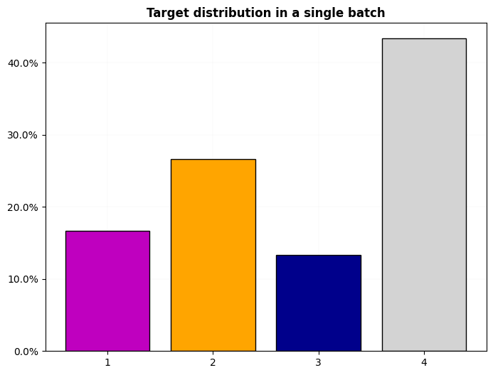

'1'new_dl = dls.new_dl(X)
first(new_dl)(TSTensor(samples:60, vars:1, len:570, device=cpu, dtype=torch.float32),)new_dl = dls.new_dl(X, y=y)
first(new_dl)(TSTensor(samples:60, vars:1, len:570, device=cpu, dtype=torch.float32),
TensorCategory([3, 1, 3, 3, 3, 3, 2, 1, 3, 1, 3, 3, 1, 3, 1, 3, 2, 0, 3, 0, 1,
1, 1, 3, 3, 1, 3, 0, 2, 0, 3, 1, 1, 2, 0, 0, 0, 3, 1, 3, 3, 3,
3, 1, 2, 2, 1, 2, 1, 3, 3, 0, 0, 1, 3, 1, 0, 2, 3, 3]))dls.train.dataset.split_idxs, dls.train.dataset.splits, dls.valid.split_idxs((#30) [0,1,2,3,4,5,6,7,8,9...],
(#30) [0,1,2,3,4,5,6,7,8,9...],
(#30) [30,31,32,33,34,35,36,37,38,39...])# 2d input array and tfms == None return a NoTfmLists object
X, y, splits = get_UCR_data('OliveOil', on_disk=False, split_data=False)
X = X[:, 0]
tfms=[None, TSCategorize()]
dls = get_ts_dls(X, y, splits=splits, tfms=tfms, bs=8)
test_eq(1, dls.vars)
test_eq(X.shape[-1], dls.len)
test_eq(type(dls.tls[0]).__name__, 'NoTfmLists')
dls = get_ts_dls(X, y, splits=splits, tfms=tfms, bs=8, inplace=False)
test_eq(1, dls.vars)
test_eq(X.shape[-1], dls.len)
test_eq(type(dls.tls[0]).__name__, 'NoTfmLists')# regression
dsid = 'OliveOil'
X, y, splits = get_UCR_data(dsid, on_disk=True, split_data=False)
dls = get_ts_dls(X, np.random.rand(60, ), tfms=[None, ToNumpyTensor], splits=splits)
dls.show_dist()
dls.train.show_dist()
xb,yb = first(dls.train)
dls.decoder((xb, ))
dls.decoder((xb[0], ))
dls.decoder((xb, yb))
dls.decoder((xb[0], yb[0]))
dls.decoder(yb)
dls.decoder(yb[0])
test_eq((dls.cat, dls.c), (False, 1))
test_eq(dls.cws, None)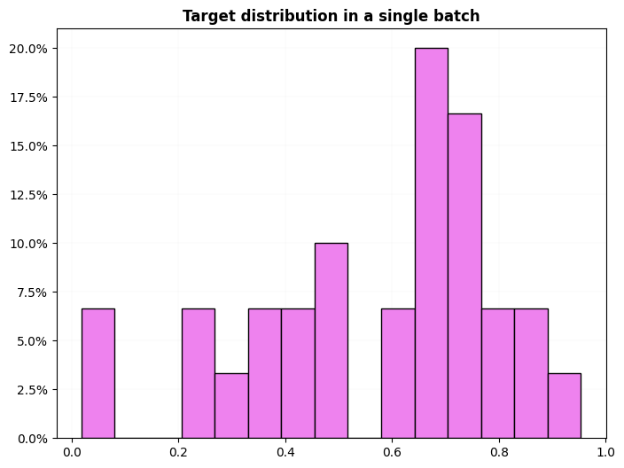
# regression, multilabel
dsid = 'OliveOil'
X, y, splits = get_UCR_data(dsid, on_disk=True, split_data=False)
dls = get_ts_dls(X, np.random.rand(60, 3) * 5, tfms=[None, ToNumpyTensor], splits=splits)
dls.show_dist()
dls.train.show_dist()
xb,yb = first(dls.train)
dls.decoder((xb, ))
dls.decoder((xb[0], ))
dls.decoder((xb, yb))
dls.decoder((xb[0], yb[0]))
dls.decoder(yb)
dls.decoder(yb[0])
test_eq((dls.cat, dls.c, dls.d),(False, 1, 3))
test_eq(dls.cws, None)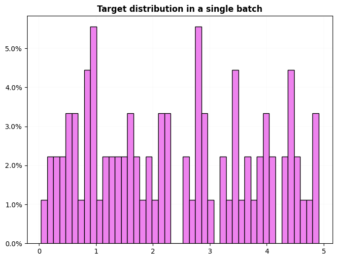
# multiclass, multilabel
dsid = 'OliveOil'
X, y, splits = get_UCR_data(dsid, on_disk=True, split_data=False)
cm = {
'1':'A',
'2':['B', 'C'],
'3':['B', 'D'] ,
'4':'E',
}
keys = cm.keys()
new_cm = {k:v for k,v in zip(keys, [listify(v) for v in cm.values()])}
y_multi = np.array([new_cm[yi] if yi in keys else listify(yi) for yi in y], dtype=object)
dls = get_ts_dls(X, y_multi, tfms=[None, TSMultiLabelClassification()], splits=splits)
dls.show_dist()
dls.train.show_dist()
xb,yb = first(dls.train)
dls.decoder((xb, ))
dls.decoder((xb[0], ))
dls.decoder((xb, yb))
dls.decoder((xb[0], yb[0]))
dls.decoder(yb)
dls.decoder(yb[0])
test_eq((dls.cat, dls.c), (True, 1))
test_ne(dls.cws.cpu().numpy(), None)
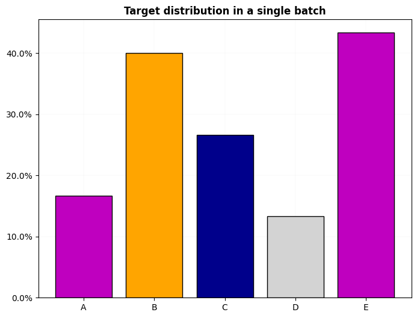
dsid = 'OliveOil'
X, y, splits = get_UCR_data(dsid, on_disk=True, split_data=False)
cm = {
'1':'A',
'2':['B', 'C'],
'3':['B', 'D'] ,
'4':'E',
}
keys = cm.keys()
new_cm = {k:v for k,v in zip(keys, [listify(v) for v in cm.values()])}
y_multi = np.array([new_cm[yi] if yi in keys else listify(yi) for yi in y], dtype=object)
dls = get_ts_dls(X, y_multi, tfms=[None, TSMultiLabelClassification()], splits=splits)
test_eq(dls.new(X[0]).one_batch().shape, (1, 570))
test_eq(dls.new(X[:15]).one_batch().shape, (15, 1, 570))
test_eq(dls.train.new(X[0]).one_batch().shape, (1, 570))
test_eq(dls.valid.new(X[:15]).one_batch().shape, (15, 1, 570))bs = 25
dsets = TSDatasets(X, y, tfms=[None, TSCategorize()], splits=splits)
dls = TSDataLoaders.from_dsets(dsets.train, dsets.valid, bs=[bs, bs*2], batch_tfms=add(1), num_workers=0)
xb,yb = dls.train.one_batch()
test_eq(xb.cpu().data, tensor(X_on_disk[splits[0]][dls.train.idxs]) + 1)dsets = TSDatasets(X, y, tfms=[None, TSCategorize()], splits=splits)
dls = TSDataLoaders.from_dsets(dsets.train, dsets.valid, bs=[bs, bs*2])
xb,yb = dls.train.one_batch()
test_eq(xb.shape, (min(bs, len(splits[0])), X.shape[1], X.shape[-1]))
it = iter(dls.valid)
for xb,yb in it:
test_close(xb.cpu(), TSTensor(X[splits[1]][dls.valid.idxs]))bs = 64
dsets = TSDatasets(X, y, tfms=[add(1), TSCategorize()], splits=RandomSplitter(valid_pct=.3)(y_array))
dls = TSDataLoaders.from_dsets(dsets.train, dsets.valid, bs=[bs, bs*2])
xb,yb = dls.train.one_batch()
test_eq(xb.shape, (min(bs, len(dsets.train)), X_on_disk.shape[1], X_on_disk.shape[-1]))
xb,yb = dls.valid.one_batch()
test_eq(xb.shape, (min(bs*2, len(dsets.valid)), X_on_disk.shape[1], X_on_disk.shape[-1]))dsets = TSDatasets(X_on_disk, y_array, tfms=[None, TSCategorize()], splits=splits)
dls = TSDataLoaders.from_dsets(dsets.train, dsets.valid, bs=[32, 64])
for i in range(10):
dl = dls.train if random.random() < .5 else dls.valid
xb,yb = dl.one_batch()
torch.equal(xb.cpu(), TSTensor(X_on_disk[dl.input_idxs]))
dsets = TSDatasets(X_on_disk, y_array, tfms=[None, TSCategorize()])
dls = TSDataLoaders.from_dsets(dsets, bs=32)
for i in range(10):
xb,yb = dls.one_batch()
torch.equal(xb.cpu(), TSTensor(X_on_disk[dl.input_idxs]))
dsets = TSDatasets(X_on_disk, tfms=None)
dls = TSDataLoaders.from_dsets(dsets, bs=32)
for i in range(10):
xb = dls.one_batch()
torch.equal(xb[0].cpu(), TSTensor(X_on_disk[dl.input_idxs]))dsets = TSDatasets(X_on_disk, y_array, tfms=[None, TSCategorize()])
dls = TSDataLoaders.from_dsets(dsets, bs=32)
test_eq_type(dls.split_idxs, L(np.arange(len(X_on_disk)).tolist()))X, y, splits = get_UCR_data('NATOPS', return_split=False)
tfms = [None, [TSCategorize()]]
dls = get_ts_dls(X, y, tfms=tfms, splits=splits, bs=[64, 128])
dls.show_batch()
dls.show_dist()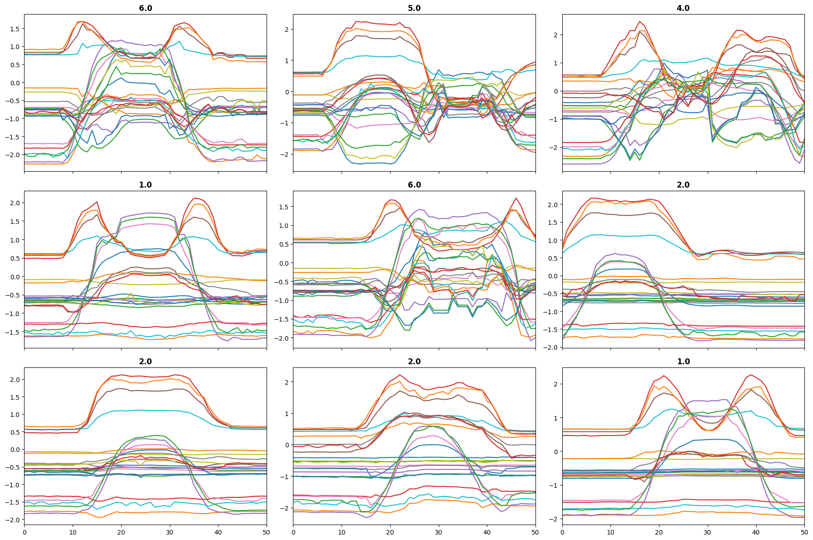
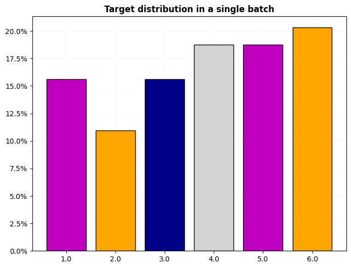
# test passing a list with categories instead of a numpy array
dsid = 'NATOPS'
bs = 64
X2, y2, splits2 = get_UCR_data(dsid, return_split=False)
vocab = sorted(set(y))
tfms = [None, [TSCategorize(vocab=vocab)]]
dsets = TSDatasets(X2, y2, tfms=tfms, splits=splits2)
dls = TSDataLoaders.from_dsets(dsets.train, dsets.valid, bs=[bs, bs*2])
dls.train.one_batch()(TSTensor(samples:64, vars:24, len:51, device=cpu, dtype=torch.float32),
TensorCategory([1, 3, 1, 3, 3, 5, 5, 0, 3, 3, 5, 1, 5, 1, 0, 2, 1, 3, 5, 5, 3,
0, 3, 3, 5, 2, 5, 1, 2, 0, 3, 2, 4, 4, 1, 1, 2, 2, 4, 2, 5, 4,
3, 2, 3, 0, 2, 0, 2, 4, 5, 1, 5, 1, 0, 1, 1, 3, 0, 5, 3, 1, 3,
2]))# MultiCategory
bs = 64
n_epochs = 100
tfms = [None, [MultiCategorize()]]
dsets = TSDatasets(X2, y2, tfms=tfms, splits=splits2)
dls = TSDataLoaders.from_dsets(dsets.train, dsets.valid, bs=bs)
dls.train.one_batch()(TSTensor(samples:64, vars:24, len:51, device=cpu, dtype=torch.float32),
TensorMultiCategory([[7, 0, 1],
[7, 0, 1],
[7, 0, 1],
[6, 0, 1],
[2, 0, 1],
[5, 0, 1],
[6, 0, 1],
[6, 0, 1],
[7, 0, 1],
[7, 0, 1],
[7, 0, 1],
[7, 0, 1],
[6, 0, 1],
[6, 0, 1],
[6, 0, 1],
[2, 0, 1],
[2, 0, 1],
[3, 0, 1],
[3, 0, 1],
[7, 0, 1],
[6, 0, 1],
[3, 0, 1],
[4, 0, 1],
[3, 0, 1],
[7, 0, 1],
[7, 0, 1],
[6, 0, 1],
[7, 0, 1],
[3, 0, 1],
[3, 0, 1],
[4, 0, 1],
[6, 0, 1],
[4, 0, 1],
[3, 0, 1],
[5, 0, 1],
[6, 0, 1],
[2, 0, 1],
[6, 0, 1],
[3, 0, 1],
[3, 0, 1],
[4, 0, 1],
[5, 0, 1],
[2, 0, 1],
[4, 0, 1],
[4, 0, 1],
[2, 0, 1],
[2, 0, 1],
[3, 0, 1],
[4, 0, 1],
[3, 0, 1],
[3, 0, 1],
[5, 0, 1],
[5, 0, 1],
[7, 0, 1],
[2, 0, 1],
[7, 0, 1],
[3, 0, 1],
[3, 0, 1],
[3, 0, 1],
[4, 0, 1],
[5, 0, 1],
[7, 0, 1],
[3, 0, 1],
[2, 0, 1]]))The combination of splits, sel_vars and sel_steps is very powerful, as it allows you to perform advanced indexing of the array-like X.
from tsai.data.validation import TSSplitterX = np.arange(16*5*50).reshape(16,5,50)
y = alphabet[np.random.randint(0,3, 16)]
splits = TSSplitter(show_plot=False)(y)
tfms = [None, TSCategorize()]
batch_tfms = None
dls = get_ts_dls(X, y, splits=splits, sel_vars=[0, 1, 3], sel_steps=slice(-10, None), tfms=tfms, batch_tfms=batch_tfms)
xb,yb=dls.train.one_batch()
test_close(X[dls.input_idxs][:, [0, 1, 3]][...,slice(-10, None)], xb.cpu().numpy())
new_dl = dls.train.new_dl(X[:5], y[:5])
print(new_dl.one_batch())
new_empty_dl = dls.new_empty() # when exported
dl = new_empty_dl.new_dl(X[:10], y[:10], bs=64) # after export
dl.one_batch()(TSTensor(samples:5, vars:3, len:10, device=cpu, dtype=torch.int64), TensorCategory([2, 1, 1, 1, 0]))(TSTensor(samples:10, vars:3, len:10, device=cpu, dtype=torch.int64),
TensorCategory([1, 1, 0, 0, 1, 0, 0, 2, 0, 2]))get_dl_percent_per_epoch
get_dl_percent_per_epoch (dl, model, n_batches=None)
get_time_per_batch
get_time_per_batch (dl, model=None, n_batches=None)
X, y, splits = get_UCR_data('NATOPS', split_data=False)
tfms = [None, [TSCategorize()]]
dls = get_ts_dls(X, y, tfms=tfms, splits=splits)
train_dl = dls.train
xb, _ = train_dl.one_batch()
model = nn.Linear(xb.shape[-1], 2).to(xb.device)
t = get_dl_percent_per_epoch(train_dl, model, n_batches=10)
print(t)91.51%